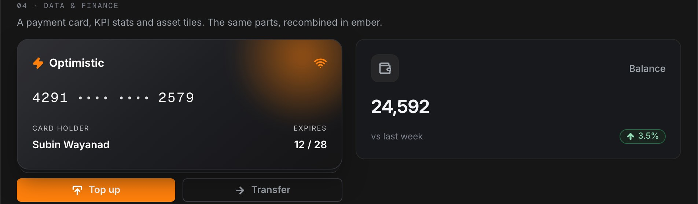

One system. ₹186Cr saved.
In FY22, Yubi was burning $50.4M a year in engineering while five brands and thirteen products drifted apart. Y.Design, a token-based multi-brand system, brought the $140M ecosystem back to one language and cut operating costs by ₹72 crore in FY24, then ₹186 crore in FY25.
FY22 closed with $50.4M burnt in engineering cost for creating products and new features, with limited resources to show for it. The majority of the products had drifted from the original product and identity, and users struggled to relate to them. When a user switched from one platform to another, the entire experience went for a toss: the learning curve went up, familiarity went away, and a platform meant to be self serve turned Ops heavy instead.
Every inconsistency was a conversation that hadn’t happened. Every rework was a cost nobody had calculated. So I calculated it: crores of engineering rework a year, all traceable to fragmentation.
The audit made the chaos undeniable. Navigation flipped between top bars and left rails, sometimes within the same product, and the app switcher lived in a different place on every platform. Filters fought layouts for the same screen real estate. Backgrounds ran light blue, grey, or white with no logic, and cards disagreed on radius, shadow, stroke, and padding. None of this was any team's fault. It was the natural result of 13+ products shipping fast with no shared language.
Building YDS was a cultural shift wearing a design project's clothes. Thirteen-plus product leaders each had their own roadmap, so alignment ran on negotiation, workshops, and standing advocacy rather than mandate. Designers and developers were understandably reluctant to give up custom solutions they felt were unique to their product. The audit itself spanned 44 designers and hundreds of screens. And adoption had a real cost: developers refactoring old code sometimes slowed short-term delivery, a trade I had to defend in every quarterly conversation.
Two structures made it stick. Governance: every new design and build passes YDS review, so the system stays current instead of rotting. And a contribution model that balances central ownership with open contribution, so product designers extend the system without breaking it. That pair is also the budgeting story: a dedicated system team is an upfront cost that repays itself in reduced duplication, faster delivery, and the ₹186Cr the outcome section counts.
The answer to all six was a dedicated design system team, argued on six grounds: a single source of truth across every Yubi product, reduced duplication of components and flows, faster delivery through reuse, a unified experience that builds user trust, a bridge team keeping design and engineering speaking one language, and continuous improvement, governance, audits, and documentation that keep the system alive rather than archived.
I never pitched a design system as a design initiative. I presented the annual cost of not having one, in currency the CFO reads. That conversation happened once, and Y.Design was funded and built starting the next quarter.
The architecture followed the business case: tokens layered Core to Semantic to Theme, so a component never names a hex. It asks for a role, the role points at a ramp, and the ramp points at one core value. Re-point one ramp and every product re-skins at once, five brands from a single source of truth.

And the system is headless. The core carries structure, behaviour, and accessibility with no brand baked in; each brand plugs its own tokens into the same skeleton. That is how one system serves 20+ products across 4 different brands without ever splitting.
Solving only at the UI level would not have addressed systemic fragmentation, so the transformation ran on three levels at once. Driving it took cross-functional alignment: with product on outcome metrics like conversion and TAT, with engineering on scalable patterns and reduced rework, with leadership on design reframed as a business driver rather than a support function.
The architecture lives on in Optimistic Design, my public design system built on the same thinking: 57 production components on three token tiers, from a full data grid with filtering, grouping, pinning, and inline editing, down to one set of card parts recombined per product.


The library, as it stands: 38 production-ready components in Figma and code, organised in three tiers.
Nobody commissioned Y.Design. It began as a design initiative and stayed design led the whole way: the pitch, the roadmap, the alignment, the education, the rollout, and the proof.
A dedicated system pod inside the 20+ person design organisation owned the core. Product designers contributed patterns back through a governance process, so the system stayed close to real product needs instead of becoming an ivory tower. Engineering co-owned the tokens.
And because a 20-person team serving 13 products cannot run on manual handoffs, we automated early: Token Studio pipelines, automated component variant generation, and AI-assisted design review. The front-end footprint needed to maintain UI went from 68 engineers to 12.
64% of common flows are now unified and shared. Major components like the Table ship as a full plug and play model. And over two years the platform UX and UI changed 100%: the project that took Yubi 1.0 to Yubi 2.0.
Engineering burn fell from $50.4M in FY22 to $22.2M in FY25, while operating costs fell by ₹72 crore in FY24 and ₹186 crore in FY25. UI bugs per quarter dropped from 139 to 4. Adoption climbed from 30% to 85%. And for the first time, thirteen products felt like they were made by one team.
Y.Design proved that the fastest way to fund design maturity is not evangelism. It is accounting. Price the fragmentation, show the invoice, and the organisation will build the system for you.